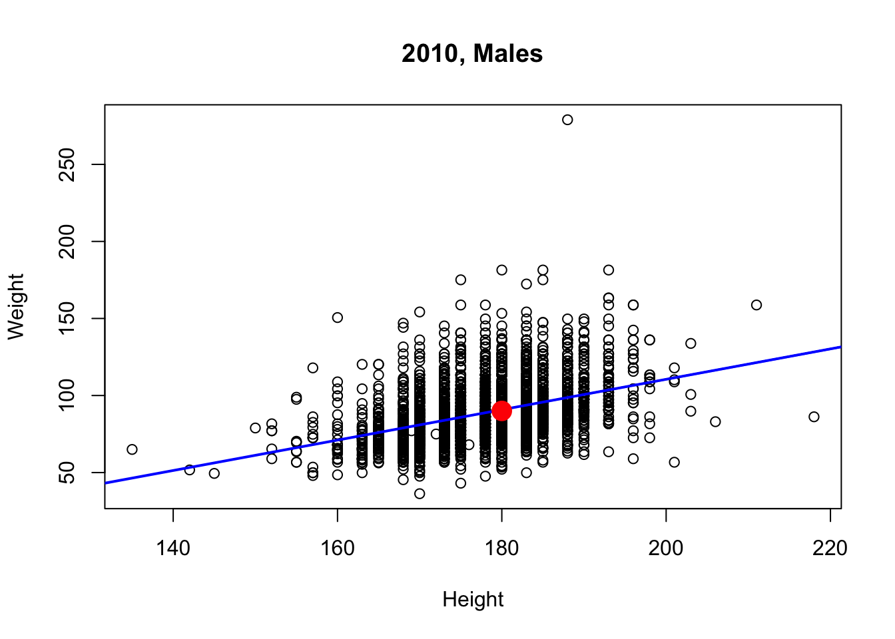
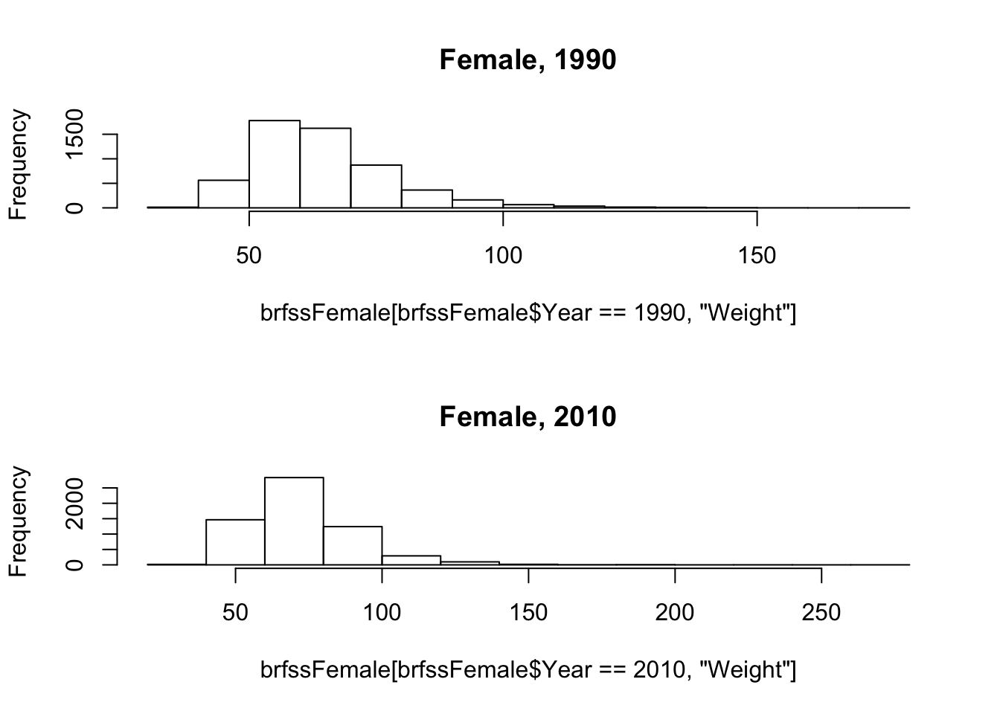
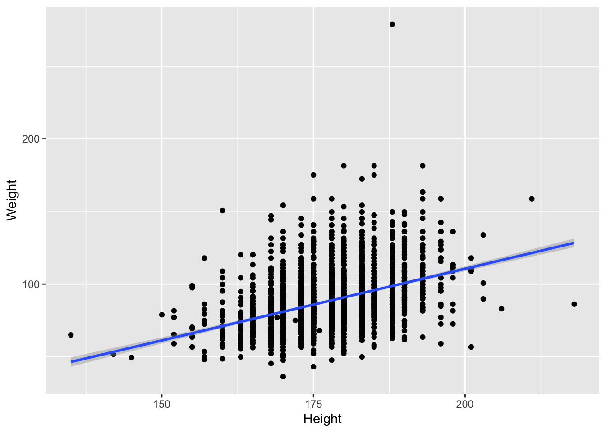
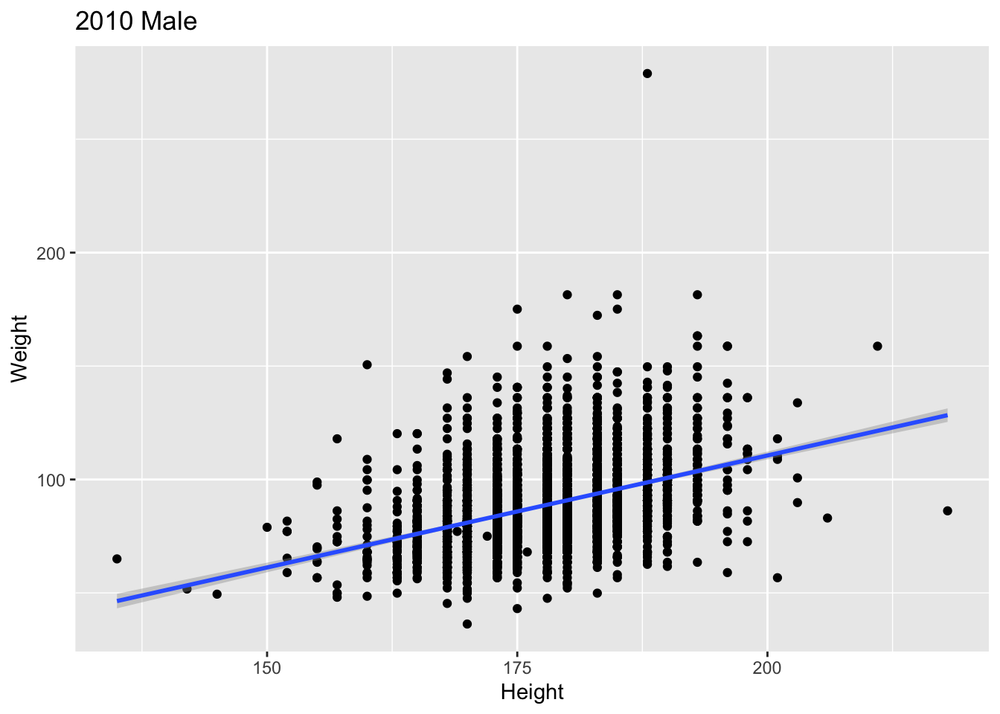

R Work Flows and Data Visualization
Martin Morgan Martin.Morgan@RoswellPark.org & Sean Davis seandavi@gmail.com
Using R in real life
Organizing work
Usually, work is organized into a directory with:
- A folder containing R scripts (
scripts/BRFSS-visualize.R) - ‘External’ data like the csv files that we’ve been working with, usually in a separate folder (
extdata/BRFSS-subset.csv) - (sometimes) R objects written to disk using
saveRDS()(.rdsfiles) that represent final results or intermediate ‘checkpoints’ (extdata/ALL-cleaned.rds). Read the data into an R session usingreadRDS(). - Use
setwd()to navigate to folder containing scripts/, extdata/ folder - Source an entire script with
source("scripts/BRFSS-visualization.R").
R can also save the state of the current session (prompt when choosing to quit() R), and to view and save the history() of the the current session; I do not find these to be helpful in my own work flows.
R Packages
All the functionality we have been using comes from packages that are automatically loaded when R starts. Loaded packages are on the search() path.
search()## [1] ".GlobalEnv" "package:stats" "package:graphics"
## [4] "package:grDevices" "package:utils" "package:datasets"
## [7] "package:methods" "Autoloads" "package:base"Additional packages may be installed in R’s libraries. Use `installed.packages() or the RStudio interface to see installed packages. To use these packages, it is necessary to attach them to the search path, e.g., for survival analysis
library("survival")There are many thousands of R packages, and not all of them are installed in a single installation. Important repositories are
- CRAN: https://cran.r-project.org/
- Bioconductor: https://bioconductor.org/packages
Packages can be discovered in various ways, including CRAN Task Views and the Bioconductor web and Bioconductor support sites.
To install a package, use install.packages() or, for Bioconductor packages, instructions on the package landing page, e.g., for GenomicRanges. Here we install the ggplot2 package.
install.packages("ggplot2", repos="https://cran.r-project.org")A package needs to be installed once, and then can be used in any R session.
Graphics and Visualization
Load the BRFSS-subset.csv data
path <- "BRFSS-subset.csv" # or file.choose()
brfss <- read.csv(path)Clean it by coercing Year to factor
brfss$Year <- factor(brfss$Year)Base R Graphics
Useful for quick exploration during a normal work flow.
Main functions:
plot(),hist(),boxplot(), …Graphical parameters – see
?par, but often provided as arguments toplot(), etc.Construct complicated plots by layering information, e.g., points, regression line, annotation.
brfss2010Male <- subset(brfss, (Year == 2010) & (Sex == "Male")) fit <- lm(Weight ~ Height, brfss2010Male) plot(Weight ~ Height, brfss2010Male, main="2010, Males") abline(fit, lwd=2, col="blue") points(180, 90, pch=20, cex=3, col="red")
Approach to complicated graphics: create a grid of panels (e.g.,
par(mfrows=c(1, 2)), populate with plots, restore original layout.brfssFemale <- subset(brfss, Sex=="Female") opar = par(mfrow=c(2, 1)) # layout: 2 'rows' and 1 'column' hist( # first panel -- 1990 brfssFemale[ brfssFemale$Year == 1990, "Weight" ], main = "Female, 1990") hist( # second panel -- 2010 brfssFemale[ brfssFemale$Year == 2010, "Weight" ], main = "Female, 2010")
par(opar) # restore original layout
What makes for a good graphical display?
- Common scales for comparison
- Efficient use of space
- Careful color choice – qualitative, gradient, divergent schemes; color blind aware; …
- Emphasis on data rather than labels
- Convey statistical uncertainty
Grammar of Graphics: ggplot2
library(ggplot2)‘Grammar of graphics’
Specify data and ‘aesthetics’ (
aes()) to be plottedAdd layers (
geom_*()) of informationggplot(brfss2010Male, aes(x=Height, y=Weight)) + geom_point() + geom_smooth(method="lm")## `geom_smooth()` using formula 'y ~ x'
Capture a plot and augment it
plt <- ggplot(brfss2010Male, aes(x=Height, y=Weight)) + geom_point() + geom_smooth(method="lm") plt + labs(title = "2010 Male")## `geom_smooth()` using formula 'y ~ x'
Use
facet_*()for layoutsggplot(brfssFemale, aes(x=Height, y=Weight)) + geom_point() + geom_smooth(method="lm") + facet_grid(. ~ Year)## `geom_smooth()` using formula 'y ~ x'
Choose display to emphasize relevant aspects of data
ggplot(brfssFemale, aes(Weight, fill=Year)) + geom_density(alpha=.2)